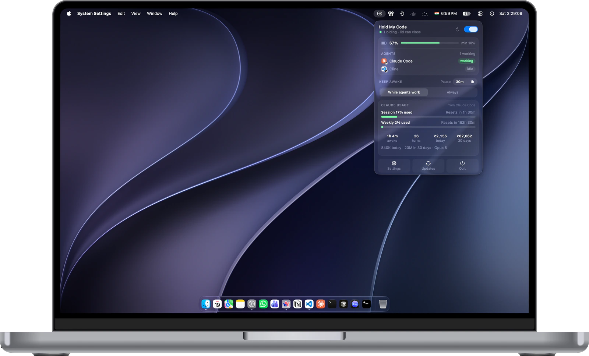

awake · lid open
Agent working
A task kicks off
Your agent kicks off a run: a build, a test suite, one of those refactors that takes a while. The lid is open and nothing dramatic has happened yet.
Step 1 of 5
HoldMyCode blocks sleep only while your coding agent is actually running a task, whether the lid is open, closed, or halfway into your bag. The moment it goes idle, it hands sleep back to macOS and gets out of your way.

HoldMyCode holding the wake lock while Claude Code works
How it works
Five steps, start to finish. Here's what actually happens when you slam the lid shut in the middle of a run.
Agent working
Your agent kicks off a run: a build, a test suite, one of those refactors that takes a while. The lid is open and nothing dramatic has happened yet.
Step 1 of 5
Agent working
Normally this is where the run quietly dies. macOS sees the lid close and starts tucking the machine into bed.
Step 2 of 5
Holding
The helper blocks lid sleep for as long as the agent keeps working. The screen is dark, the laptop is in your bag, and the run carries on.
Step 3 of 5
Agent idle
The lifecycle hook reports idle. A 30 second grace timer starts, in case another tool call is about to land.
Step 4 of 5
Asleep
Nothing left to hold. HoldMyCode lets go and your Mac sleeps on its normal schedule, with no stray assertion quietly keeping it up all night.
Step 5 of 5
Features
Everything here answers one question well: is an agent working right now, and should this Mac stay up for it?
The Mac stays up only while a watched agent is actually working. An agent sitting idle at a prompt, waiting on you, gets no wake lock at all, and your machine sleeps like it normally would.
Lifecycle hooks report working and idle per session, so HoldMyCode knows the difference between a busy agent and a process that merely happens to be running.
Set a percentage where the hold gives up, or restrict holds to when you're plugged in. Low Power Mode is respected rather than fought.
Planned: choose whether the display sleeps on lid close, dims while the agent runs, or shuts off a set number of seconds after the work finishes. Not in the app yet.
A banner, and an optional sound, when a hold starts, when it ends, and when your battery threshold cuts it short. You're never left guessing what the Mac decided behind your back.
Live status, elapsed hold time, battery level, and a master toggle, all one click from the menu bar. There's a global hotkey too, for when reaching for the mouse feels like too much.
Supported agents
Command line agents and editors report through their own lifecycle hooks, which HoldMyCode installs for you in one click. Cowork is read from the Claude app's task logs. Claude chat keeps no local record, so that one is an honest estimate.
Claude Code
Lifecycle hooksClaude Cowork
Task logsClaude chat
EstimatedCodex
Lifecycle hooksGemini CLI
Lifecycle hooksCursor
Lifecycle hooksCline
Lifecycle hooksLifecycle hooks and task logs are a real working / idle signal. Estimated means it's inferred from the Claude app's network traffic while a reply streams.
See it in action
Under a minute, start to finish. First launch to a closed lid that keeps running, with nothing trimmed out.
The setup itself: drag it to Applications, approve the helper once, then start a task and close the lid.
FAQ
Those keep your Mac awake for as long as you leave them switched on. The decision is yours, and the classic failure mode is forgetting to flip it off, then finding a hot, flat laptop at the bottom of your bag. HoldMyCode ties the wake lock to the agent instead. The hold exists only while a watched agent is in the middle of a task, and it ends by itself when the work does. Nothing to toggle, nothing to forget.
Yes. A plain sleep assertion isn't enough for a lid close, so HoldMyCode installs a small privileged helper that disables lid sleep while a hold is active and turns it back on the moment the hold ends. No external display, keyboard, or dongle required. macOS asks you to allow it once, in System Settings under Login Items.
It never reads your code, and nothing about your sessions leaves your Mac. Hooks record whether a session is working, plus its folder name and the start of your latest prompt, so the "finished" notification can say which task ended. That lives in a small file on your Mac. The app has no account and no analytics inside it. The only part that ever talks to a server is this website, and all it does is keep an anonymous download count and, if you choose to leave it, your email for update notices. The app itself only checks GitHub for new versions.
Claude Code, Codex, Gemini CLI, Cursor and Cline through their lifecycle hooks, which you install from the app's Agents tab. Claude Cowork works out of the box from its task logs. Claude chat is estimated from the Claude app's network traffic, so long replies keep your Mac awake, but it can't tell you when a reply is done.
A threshold you pick. Below it, the hold releases and a notification tells you why. You can also restrict holds to times when you're on power, and HoldMyCode won't override Low Power Mode. Thermal pressure ends a hold too, rather than cooking the machine in a bag.
Free. No licence key, no trial timer, no surprise paid tier waiting in the wings. It's a small utility that does one job, and charging for it isn't the plan. The app is closed source, so that's a promise rather than something you can audit, but there's no account to create and nothing to cancel.
Download
No account, no licence key, no trial. Download it, drag it to Applications, done.
Requires
macOS 14 Sonoma or laterApple silicon and Intel
Price
Free, foreverNo licence key, no trial, no tiers
On first launch
One admin promptInstalls the helper that manages lid sleep